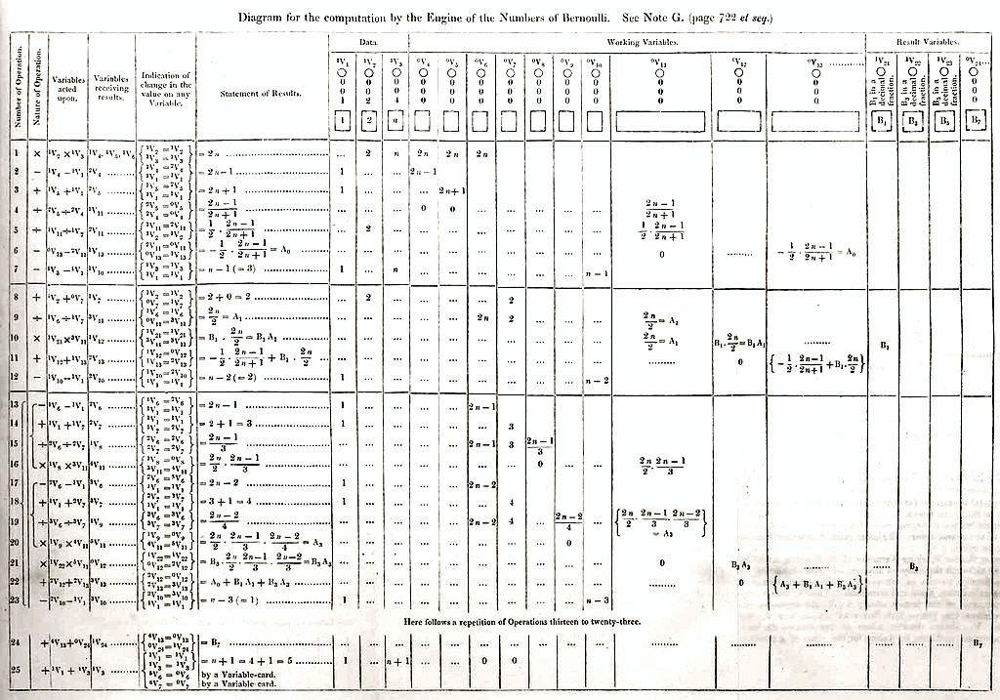

Biography

Ada Lovelace was the daughter of Lord Byron, a poet and terrible father. Fearing Lovelace would follow in her father’s footsteps, Lady Byron immersed her in mathematics. Lady Byron, herself a mathematical wiz called “Princess of Parallelograms” by Lord Byron, believed a rigorous course of study rooted in logic and reason would enable her daughter to avoid the romantic ideals and moody nature of her father. From the age of 4, Lovelace was tutored in mathematics and science, an unusual course of study for a woman in 19th-century England. Fortunately, Lovelace loved mathematics. At the age of 12, Lovelace conceptualized a flying machine. After studying the anatomy of birds and the suitability of various materials, the young girl illustrated plans to construct a winged flying apparatus before moving on to think about powered flight. She was a visionary who predicted that computer could do more than just crunch numbers. Lovelace  foresaw the multi-purpose functionality of the modern computer. Although Charles Babbage believed the use of his machines was confined to numerical calculations, she mused that any piece of content—including music, text, pictures and sounds—could be translated to digital form and manipulated by machine. Lovelace’s ideas about computing were so far ahead of their time that it took nearly a century for technology to catch up.
Diagram of an algorithm for the Analytical Engine for the computation of Bernoulli numbers, from “Sketch of The Analytical Engine Invented by Charles Babbage” by Luigi Menabrea with notes by Ada Lovelace.